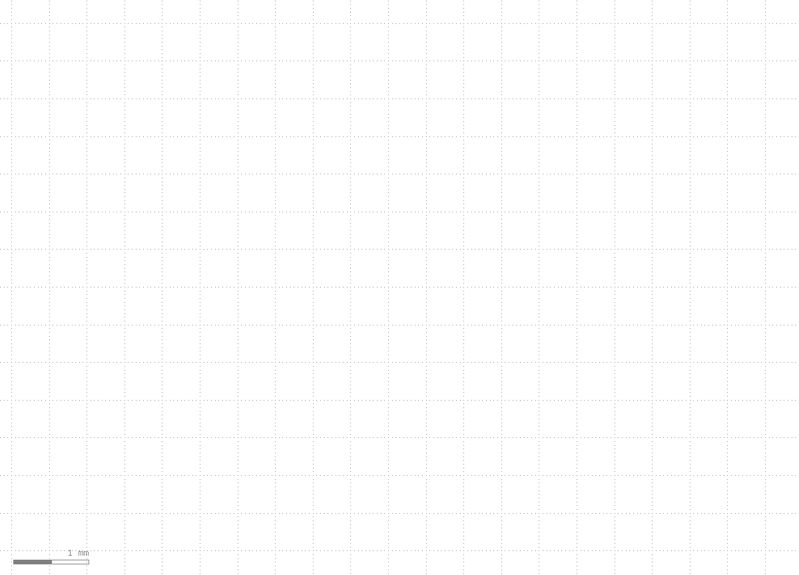
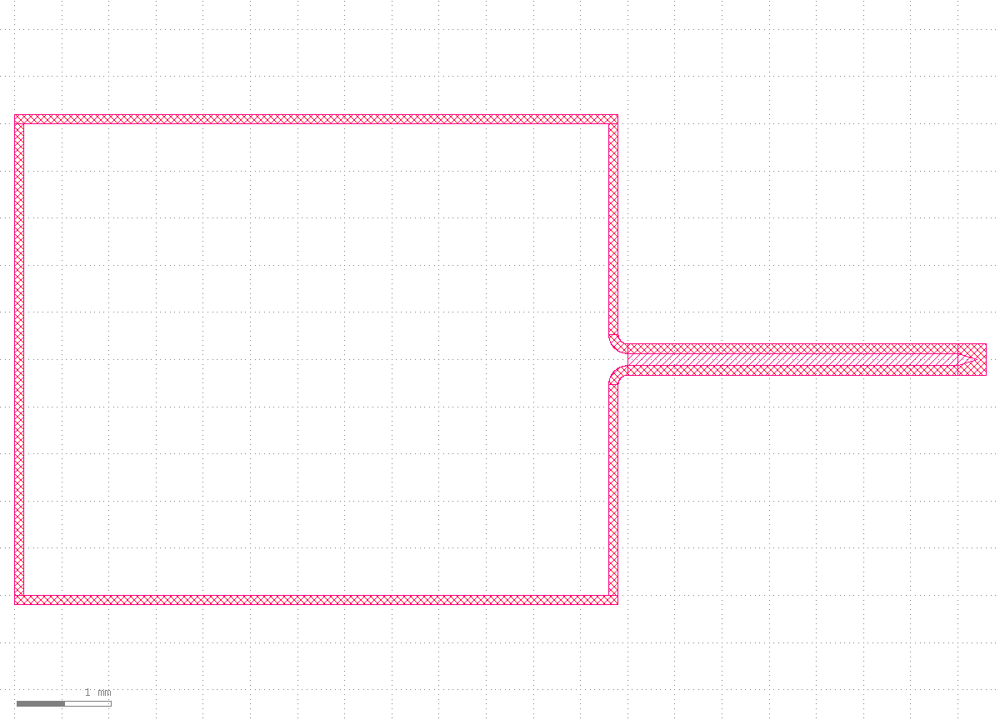
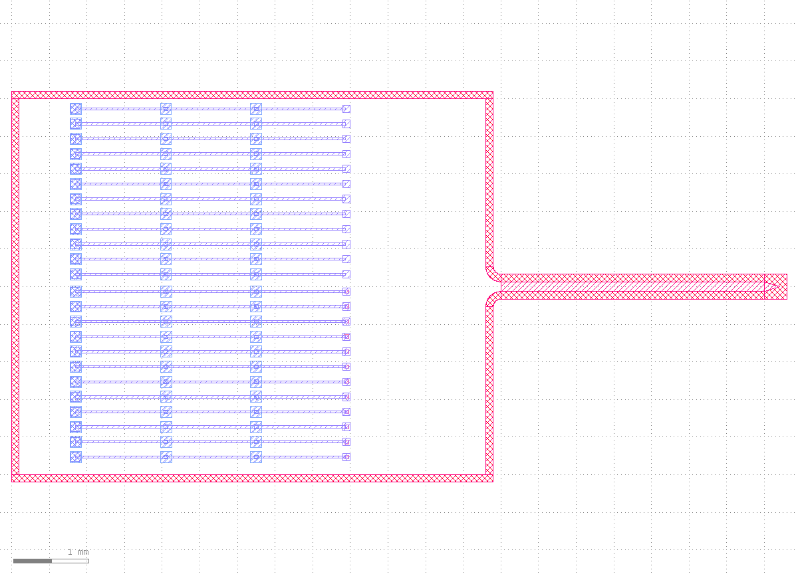
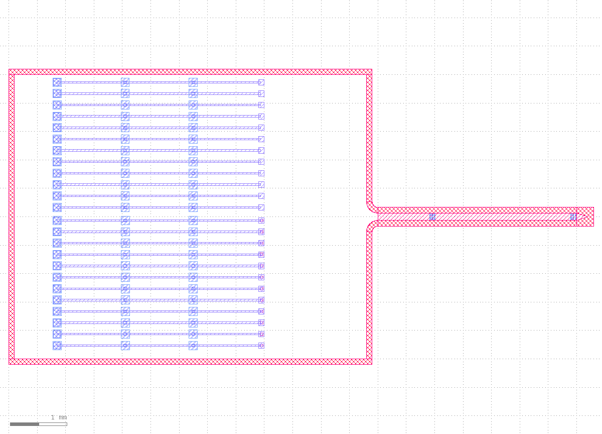
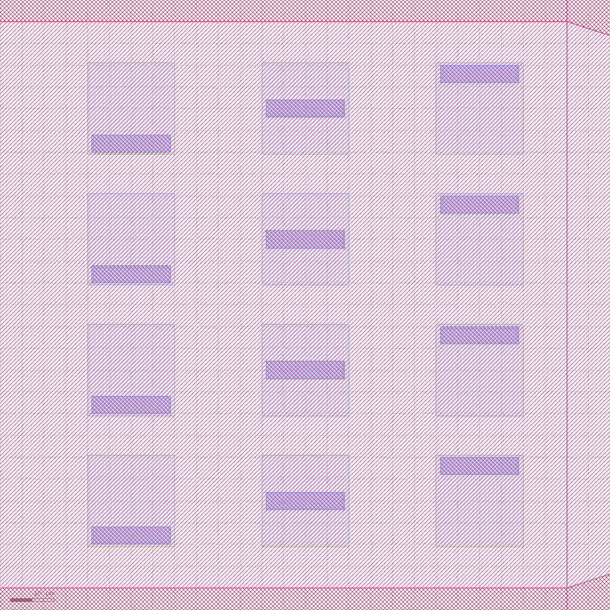
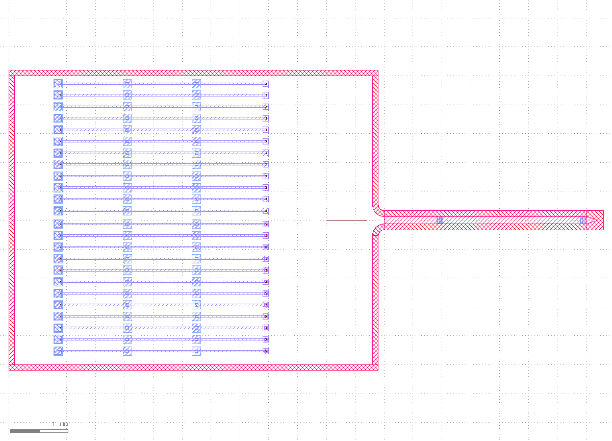
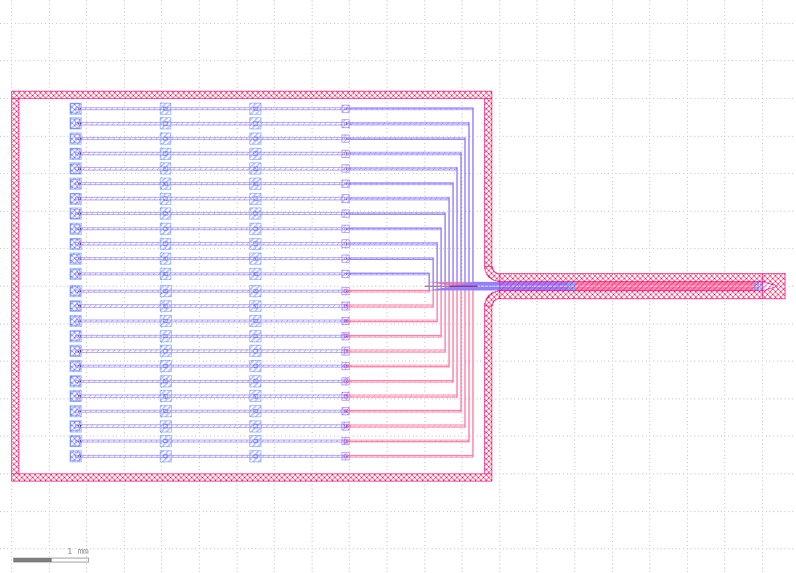
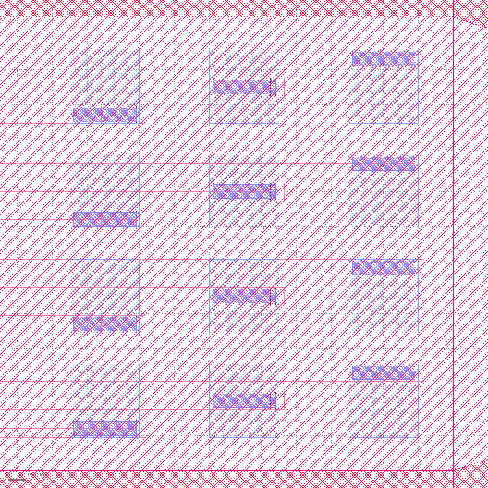
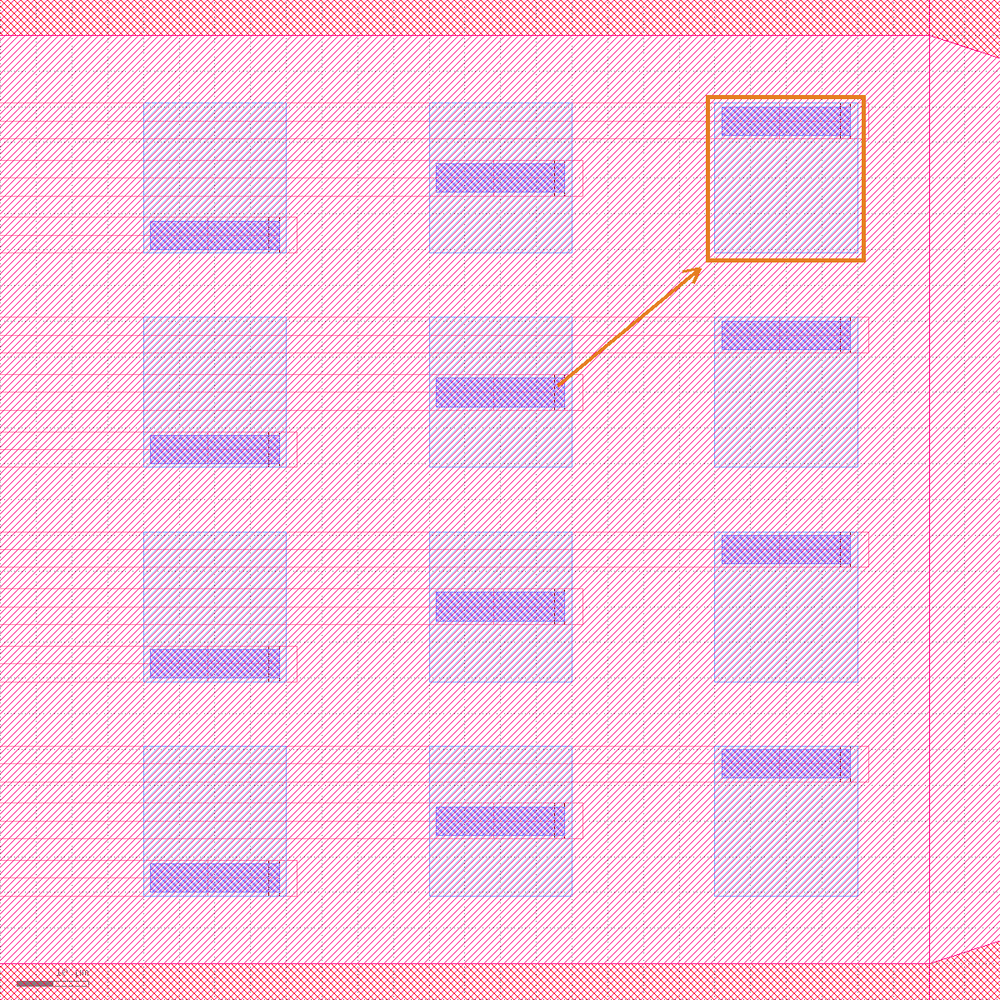

Prerequisites
- Install klink:
pip install klayout-klink(one command installs klink plus its Rust kernels -- no third-party scientific libraries needed). - KLayout running with the klink plugin loaded (RPC port defaults to
8765). - Scaffold a project and enter it:
klink init nano-demo && cd nano-demo-- the full script ispython example_template/neural_electrode.py --port <session-port> --elec-rows 4. In a repo checkout the equivalent ispython -m examples_klink.public.demos.neural_electrode --port <session-port> --elec-rows 4.
generate_harnesspcell() into 7 observable stages so each step of what's drawn, marked, and why is visible on its own. In production it's one shape.insert_many call writing all 394 shapes (see the batch-RPC rule in this repo's CLAUDE.md) -- the staged version here is purely for teaching, not a recommended pattern.view.zoom_box(bbox_um=[x1,y1,x2,y2]) and view.screenshot(bbox_um=..., width_px=..., height_px=...) both take a bbox_um coordinate argument, in microns (klink's standard user-facing unit). view.viewport reports both bbox_um (microns) and bbox_dbu (database units) so you can use whichever you need.1Create the cell + plan the layers
Every layer this device uses is example-owned (hardcoded layer numbers in example_template/neural_electrode.py) -- klink itself ships no process layers. Create the cell, set the Port/Anchor marker layers once, then ensure the 7 process layers plus klink's 3 reserved marker layers:
| Layer | Purpose |
|---|---|
1/0 | M1 (near-field bond-pad-side routing, nets 1-12) |
2/0 | VIA13 (M1↔M3 via, used only on the far electrode group) |
3/0 | M3 (far-field routing, nets 13-24, plus the electrodes' own wiring) |
4/0 | VIA35 (pad vias + electrode vias) |
5/0 | Pads (24 nets' worth of bond pads, 72 squares, plus the electrode array pads) |
6/0 | Frame (probe shell / body outline) |
7/0 | Protect (protective layer, same shape as Frame plus a center fill) |
999/99 | klink's reserved Port marker layer (KLINK_PORTS, primary Ports, labeled) |
999/98 | klink's reserved auxiliary Port layer (KLINK_ROUTE_PORTS, for routing; the 24 bond-pad-side ones show labels, the 24 electrode-side ones hide them) |
999/1 | klink's reserved Anchor marker layer (KLINK_ANCHORS) |
from klink import KLinkClient
with KLinkClient(port=PORT).connect() as c:
c.cell_create(cell_name)
c.call("port.set_layer", {"layer": "999/99"})
c.call("anchor.set_layer", {"layer": "999/1"})
for layer, name in ((1,"M1"),(2,"VIA13"),(3,"M3"),(4,"VIA35"),(5,"Pads"),(6,"Frame"),(7,"Protect")):
c.layer_ensure(layer, 0, name=name)
c.layer_ensure(999, 99, name="KLINK_PORTS")
c.layer_ensure(999, 98, name="KLINK_ROUTE_PORTS")
c.layer_ensure(999, 1, name="KLINK_ANCHORS")
c.show_cell(cell_name, zoom_fit=False)
view.zoom_box(bbox_um=...)); nothing is drawn yet.2Draw the probe body / shell
The probe body is a hollow "C"-shaped shell: on the left, a bond-pad housing (three walls, open on the right), narrowing into a rounded-transition neck, then forking into two thin upper/lower arms, and finally converging into a triangular tip far to the right -- exactly the "wide base + thin shank" shape of a real neural probe. _frame_items() draws one copy on layer 6/0 (Frame) and one on 7/0 (Protect) -- 7/0 gets two extra center/tip fill pieces -- 22 shapes total, written with one shape_insert_many call:
frame_items = _frame_items(spec) # 22 box/polygon items, covering layers 6/0 + 7/0
c.shape_insert_many(cell_name, frame_items)
6/0/7/0): bond-pad housing + neck + twin arms + tip, 22 shapes written in one call. At full-chip zoom the 130 um gap between the two arms is already too small to see as a fork -- the first taste of the "whole chip vs. local detail" scale problem the rest of this tutorial keeps coming back to.3Draw the bond pads + relay vias
Inside the housing, 24 nets are laid out along y; each net gets a 150x150 um bond pad (a typical probe-station/wire-bond pad size) at each of three x positions -- probe_pad_x_um=(-6650,-5450,-4250) -- for 3 columns x 24 rows = 72 pad squares total, relayed like a baton from the outermost position all the way to route_via_x_um=-3050. Half the nets (net_num <= pads_per_half) also get an extra pair of relay vias there -- the landing spot Stage 6's routing will use. This is the biggest single write in the whole tutorial: 288 shapes across 5 layers (1/0/2/0/3/0/4/0/5/0) in one RPC:
probe_items = items[frame_count:frame_count + probe_count] # 288 shapes
c.shape_insert_many(cell_name, probe_items)
1/0/2/0/3/0/4/0/5/0), 288 shapes in one batched write. Fired one shape.insert_box at a time, this step alone would be 288 separate RPCs -- at this scale, CLAUDE.md's batch-RPC rule isn't "best practice," it's the difference between usable and not.4Draw the electrode array (parametrized by --elec-rows)
At the far end of the shank sits the actual tissue-contacting electrode array: elec_rows rows x 3 columns, in two groups (elec_left_x_um near the neck, elec_right_x_um near the tip), each electrode pad only 20x21 um -- roughly an 8x size gap from the 150 um bond pads, the exact same "array pitch vs. probe-pad pitch, different scales" issue from this repo's CLAUDE.md, except both ends now live on one chip. Changing --elec-rows touches one number, and the row count, pad total, and shape count all move together:
--elec-rows | Bond pads per halfpads_per_half = 3×rows | Total netsnet_count = 2×pads_per_half | Electrode shape countrows×21 |
|---|---|---|---|
| 2 | 6 | 12 | 42 |
| 4 (measured in this run) | 12 | 24 | 84 |
| 6 | 18 | 36 | 126 |
The --elec-rows 2/6 rows are derived from the same HarnessPCellSpec formulas (pads_per_half/net_count are @propertys; the electrode shape count is elec_rows x 21) -- this tutorial actually ran --elec-rows 4, the other two rows were not independently re-run or screenshotted.
electrode_items = items[frame_count + probe_count:] # elec_rows x 21 = 84 shapes (rows=4 here)
c.shape_insert_many(cell_name, electrode_items)
860px and 1140px, the elec_left and elec_right groups) are the entire visible trace of 84 electrode shapes -- the direct consequence of the scale gap.
view.screenshot(bbox_um=[2370,-70,2510,70], width_px=1200, height_px=1200)'s exact clip (140x140 um, no aspect-ratio expansion): the 4x3=12 electrode pads for elec_rows=4 are now clearly countable, each pad's darker inner square its own via.5Mark Port + corridor Anchor
With geometry drawn, intent-marking begins. There are three kinds of Port here: 24 bond-pad Ports (electrical, access_mode="edge", free to slide along the pad edge, one per net), 24 relay Ports (for routing, on auxiliary layer 999/98, also one per net), and 12+24 Ports on the electrode side -- one primary Port per (row, col) electrode site (on the elec_left side, its net field carries both the bottom_net and top_net tokens) plus two auxiliary Ports (ET{top_net} on the elec_left side, EB{bottom_net} on the elec_right side, each carrying just one net) -- 84 separate port.mark calls in total. Port creation goes through PCell instantiation, which is outside shape.insert_many's batch surface -- these really are 84 individual RPCs, and this tutorial shows that plainly instead of glossing over it.
There are only 2 Anchors, but a different kind from either earlier tutorial: kind="corridor", a mandatory lane running the full chip height, its width computed by corridor_width_um() (700 um here) -- every bond-pad-side trace must converge into this corridor before it can cross the neck. This reuses the same kind="corridor" concept from the EBL tutorial's "allowed crossing window," but for a completely different purpose: not obstacle avoidance, but forced convergence.
c.call("port.mark", {
"cell": cell_name, "layer": "999/99", "name": "P36", "label": "n1",
"center_um": [x, y], "orientation": 0, "width_um": 30.0,
"port_type": "electrical", "net": "n1", "target_layer": "1/0",
"access_mode": "edge", "slide_allowed": True, "slide_edge": "x0,y0,x1,y1",
})
c.call("anchor.mark", {
"cell": cell_name, "layer": "999/1", "id": "A1_BOTTOM_M1_CORRIDOR",
"kind": "corridor", "center_um": [-1650.0, 0.0], "width_um": 700.0,
"path_points": "0,-1;0,1", "net": "n1,n2,...,n12", "priority": 1, "required": True,
})
n1...n24) and the corridor marker line at the housing exit are visible at this scale; the electrode-side Ports are only 5 um wide -- sub-pixel in a full-chip screenshot. A pixel-level diff (step-04 vs. this image) confirms every changed pixel is inside x∈[118,719], the bond-pad region -- the electrode region x∈[800,1200] shows zero pixel difference. Seeing where the electrode-side Ports actually landed has to wait for Step 7's detail crop.6Corridor-constrained batch routing
Once everything is marked, one pass routes all 24 nets: pull every auxiliary Port and the corridor Anchors back in bulk with port.list/anchor.list, group by route_layer (1/0 in one group, 3/0 in the other), and call route_tapered_hybrid_many once per group (a visibility graph + Dijkstra plan, computed client-side in Python, no rasterization) followed by commit_tapered_hybrid_many (one batched RPC write-back):
from klink.routing.backends.geometric.tapered_segments import (
pair_ports_by_net_tokens, route_tapered_hybrid_many, commit_tapered_hybrid_many,
)
ports = c.call("port.list", {"cell": cell_name, "layer": "999/98"})["ports"]
ports = [p for p in ports if str(p.get("name") or "").startswith(("R", "EB", "ET"))]
anchors = c.call("anchor.list", {"cell": cell_name, "layer": "999/1"})["anchors"]
pairs = pair_ports_by_net_tokens(ports) # pair source/target by shared net token
by_layer = {}
for pair in pairs:
by_layer.setdefault(pair.get("route_layer") or "10/0", []).append(pair)
for route_layer, layer_pairs in sorted(by_layer.items()):
planned = route_tapered_hybrid_many(
layer_pairs, anchors=anchors, spacing_um=8.0,
strategy="uniform", angle_mode="manhattan", validate_sibling_overlap=True,
)
commit_tapered_hybrid_many(c, cell_name, planned, route_layer=route_layer, clear=True)
1/0; the 12 blue-violet ones in the top half are nets 13-24, on 3/0): each trace keeps its own channel in the bond-pad region (CLAUDE.md's "channel isolation"), only converging into the 700 um corridor Anchor at the housing exit -- a many-to-one convergence, not each tracing its own straight line.7Finish: overview + electrode-end detail
Routing was the last geometry write; Stage 7 just looks at the result:
c.zoom_fit()
overview = c.screenshot(mode="base64", width_px=1200)
detail = c.screenshot(mode="base64", bbox_um=[2370.0, -70.0, 2510.0, 70.0],
width_px=1200, height_px=1200)view.zoom_fit): housing + 24 nets' worth of bond-pad chains + 24 traces + corridor convergence + shank + electrode array, all in one cell.

elec_right_x_um[2]=2480, y=45 -- its via is labeled EB12 (net n12, layer 1/0). This trace started at the farthest bond pad, crossed the corridor, ran nearly ten thousand microns, and landed exactly on this 20x21 um electrode (checked by coordinates via port.list, not by eye).Verify, don't just look
As the tutorials home page says: screenshots are for people, not proof of done. Here's the actual structured result from this run (--elec-rows 4):
{
"shape_item_counts": {"frame": 22, "bondpads_and_vias": 288, "electrodes": 84, "total": 394},
"port_count_total": 84,
"anchor_count_total": 2,
"route_result": {
"ok": true,
"port_count": 48,
"anchor_count": 2,
"pair_count": 24,
"groups": [
{"route_layer": "1/0", "route_count": 12, "sibling_overlap_count": 0, "obstacle_hit_count": 0, "inserted": 84},
{"route_layer": "3/0", "route_count": 12, "sibling_overlap_count": 0, "obstacle_hit_count": 0, "inserted": 84}
]
}
}ok=true, and both route-layer groups report zero sibling_overlap_count/obstacle_hit_count -- meaning all 24 traces (12 on 1/0, 12 on 3/0) avoid each other with no crossed wiring; pair_count=24 equals net_count, meaning every net paired successfully with no orphaned Port. Together these three numbers -- not "it looks connected" -- are what "this parametric harness is correctly routed" actually rests on.
Next steps
Change --elec-rows to your own row count (say 2 or 6), check the shape counts against the formula table in Stage 4, and confirm route_result.ok is still true. If you haven't read the first two yet, read them in order: "Step-by-step: drawing a Hall bar device" (the geometry-first basics: mark Port/Anchor intent, then route) and "Step-by-step: drawing an EBL wraparound nanodevice" (writefield obstacle avoidance, where kind="corridor" windows first appear) -- this tutorial's corridor Anchor borrows that exact same kind for a completely different "forced convergence" purpose. Next up is a photonics-flavored gf_mzi_module tutorial (python -m examples_klink.public.demos.gf_mzi_module --port <session-port>), which switches to the gdsfactory bridge and an MZI device. The full Port/Anchor field reference is in the MCP reference; the full design boundary for batch RPCs is in this repo's CLAUDE.md, under "Use batch RPCs for generated layouts."